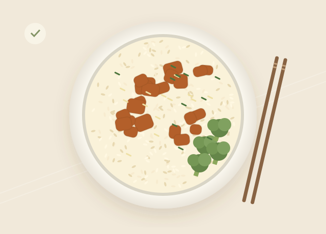

从食堂招牌到宝藏小吃，让每一次纠结，都变成一顿心满意足。
12 道精选菜品 · 3 个校园食堂好好吃饭，就是生活的小确幸

YOUR NEXT FAVORITE
吃什么不用想太久，好味道就在身边。
试试换个关键词，或者放宽一点筛选条件。
告诉我们预算和口味，发现今天的小惊喜。
SHARE YOUR BITE
记下真实感受，留给下次想吃的自己。
点评仅保存在本浏览器，不会公开上传。每道菜保留你最新的一条点评。
MADE FOR YOUR TASTE
用于「为你推荐」排序和「帮我选一餐」。
A LITTLE DELICIOUS SURPRISE
结合你的口味偏好与当前筛选，为你挑选。
ABOUT FANDIAN
饭点是一个校园食堂点评推荐原型，帮助同学按预算、口味和口碑找到想吃的菜。
当前食堂、窗口、价格、评分、营业时间与点评均为本地模拟数据，插图仅为菜品示意，不代表真实校园情况。
收藏、个人点评与口味偏好保存在当前设备的浏览器中，不需要登录，也不会上传。清除浏览器数据会清除这些记录；不同设备之间不会同步。
推荐根据预算、辣度、素食偏好和评分生成，不调用 AI 服务。过敏原信息亦为示例，实际用餐请向窗口确认。
请启用 JavaScript，以使用搜索、筛选和点评功能。